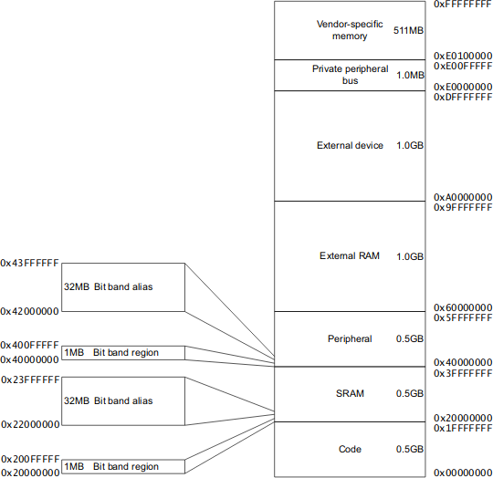

Virtualisation en Microcontrollers
Embedded & Operating Systems 9
Inhoud
- Types virtuele machines
- Virtualisatie op OS-level
- OS vs microcontroller programming
- Bibliotheken voor MC programmeren
Bytecode Virtual Machines

Hardware Virtualisation

Bare-Metal Hypervisors

Bare-Metal Hypervisors
Inhoud
- Types virtuele machines
- Virtualisatie op OS-level
- OS vs microcontroller programming
- Bibliotheken voor MC programmeren
Containers

Inhoud
- Types virtuele machines
- Virtualisatie op OS-level
- OS vs microcontroller programming
- Bibliotheken voor MC programmeren
Microcontrollers
Development Pipeline

Geheugengebruik bij microcontrollers

Peripherals
Inhoud
- Types virtuele machines
- Virtualisatie op OS-level
- OS vs microcontroller programming
- Bibliotheken voor MC programmeren
Microcontroller Libraries: Hardware Abstraction Layer
- RPi.GPIO
- Wiring (Arduino)
- Hwlib
- BIOS
Library Operating Systems en Unikernels

Wat hebben we deze les geleerd?
- Bytecode-gebaseerde virtual machines
- Hosted en bare-metal hypervisors
- OS-level virtualisation met containers
- Verschillen in development pipeline voor microcontrollers
- Verschillen in geheugengebruik tussen OS en microcontrollers
- Libraries voor microcontrollers